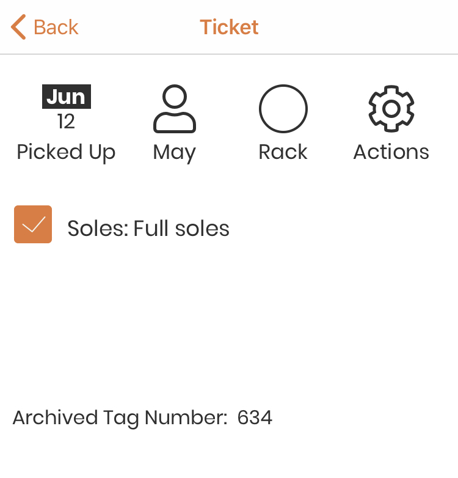

Archived Tickets¶
When a ticket is complete, and the item has been picked up, the ticket is archived. The tag number is removed from the ticket and can now be used again for a new ticket, if desired. The ticket can no longer be edited, but the information is available for later reference.
To find a customer’s archived ticket, tap on the ‘Archived Tickets’ link on thier status page. See Customer List for help with finding a customer.
An Archived ticket page has the following possible components:
Archived Ticket Status bar¶
Date/Status¶

The Calendar icon shows the current status of the ticket, and the Month/Date that the ticket was put in that status. An archived ticket will always show the the ‘Picked Up’ status, and the date on which it was picked up.
Tapping on the status icon will show you the full status description in a small window. Tap outside of the window to close it.
Customer¶

The customer icon shows the last name of the customer. Tapping on the customer icon will take you to the customer status page for that customer.
See Customer Status Page for more details.
Rack #¶
Archived tickets do not have a rack number!

Ticket Repair(s)¶
Each repair type on the ticket will be shown with a checkbox when viewing the ticket. When a repair is complete, tap on the checkbox, and it will be marked as done. If you tap it by mistake, simply tap again, it will be unchecked. When all of the repairs on the ticket are marked as complete, the notifications options will appear. See: Step 4: Notifications for more details.


Ticket Photos¶
If the ticket has photos, they will be shown here. You can add more photos without editing the ticket. Just tap on the ‘add image’ icon.

Your device camera will open. Click the shutter button to take a picture. If you are happy with the image, click on ‘Use Photo’, otherwise click on ‘Retake’ to retake the picture. The ‘add image’ will be replaced with the thumbnail while the image uploads.
As soon as the upload is complete, the ‘add image’ icon will be shown again, and another image can be taken. Thumbnails will appear to the right of the icon.
Note
Photos will occasionally take a little while to upload to the server. Do not worry if you do not see the uploaded photo right away!
Archived Tag Number¶
When a ticket is archived, Repairtagger removes the tag number from the ticket, and saves it as the archived tag number. It will look like this:
{kind=link}
If an archived ticket does not have an Archived Tag Number, it is because it was archived before we added the functionality to store the tag number. Any newly archived tickets should have the tag number.